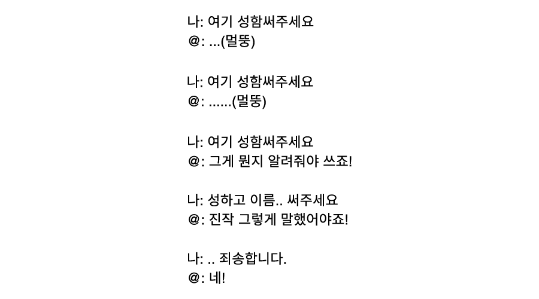

기획의도
최근 인터넷에서 젊은 층을 중심으로 ‘심심한 사과’, ‘무료하다’, ‘연세’ 등의 한자어를 모르는,
세대 간 언어 소통 문제가 논란이 되었고, 다양한 형태의 뉴미디어의 등장으로 인해 정보 습득 방법,
현저히 떨어지는 독서량 등의 문제를 가져왔다. 한자어의 필요성을 느끼지 못하는 젊은 층을
중심으로 문해력이 심각한 문제로 대두되어 있어 이를 인지할 필요가 있다.
요즘 어휘력프로젝트에서는 어휘력 퀴즈인 '맞추다'와 책 추천 '학습하다'를 통해,
젊은 층이 잘 모르는 단어에 더 친숙하게 접근하고자 한다.

문해력 실험 설문조사 결과
(기간 : 2021년 2월 13일 - 3월 13일 / 대상 : 성인 883명 / 단위 : %)

상단의 그래프는 2021년, TV에서 방영한 ‘EBS 당신의 문해력’ 중 성인 2030세대 883명을 대상으로 설문 조사를 진행한 결과이다.
어휘력과 문해력 실태를 확인하고자 시행한 실험 결과에 따르면 응시자들은 11문제 중 평균 6개 정도의 정답을 맞췄고,
이들의 종합적인 평균 점수는 54점으로 집계되었다. 이들 중 글을 읽고 '의견 작성시 어려움을 느낀 적이 있다'에
72.6%가 '그런적이 있다'고 대답했고 '사회 생활시 문해력이 필요하다'에 87.9%로 가장 많은 사람들이 '그렇다'라고 대답했다.
30.7%의 응시자들이 '일상소통 불가'로 인해 '문해력이 필요하다'고 말했고, '문해력 향상'에 독서가 가장 필요한 것으로는 나타났다.
이에 따라, 현대인의 어휘력에 문제가 있음을 알리고 부족한 어휘력의 심각성을 알리고자 한다.
구직 활동 중이신가요? "아니요."
배송 중 파손으로 반송 됐습니다~ "왜 어려운 단어 쓰세요? 저 무시하세요?"
회사의 존망이 달린 사안으로~ '존나 망했다? X망?'
섭외, 확보그리고 생년월일
신청서 수리해드리겠습니다~ "제대로 작성했는데 뭘 수리해요?"
연중무휴예요. "그니까 오늘 문 닫았냐구요"
지대가 높아서 위험하지 않을까 "선배가 있는데 지대 위험한건 좀 아니지않니ㅋㅋㅋ"
어제 자정 이후로 과제물을 제출하는··· "과제 제출 금요일까지 아니에요? 금일 자정까지라고···"
금일 7시 예약 원합니다! "이번주 금요일 말씀하시는 걸까요?"
유선상으로 진행하겠습니다! "유선상이 뭔지 물어봐도될까요?"
무료한 부부입니다··· "뭐 서로 값 매기면서 사세요?"
한술 캬~ "술 드시면 10만원빵 하시지 않았어요?"
즉시 해지해드리겠습니다~ "아니 당장 끊어달라고요"
심심한 사과 말씀 드립니다. "심심한 사과? 어느 회사가 사과문에···"
연세가...어떻게 되세요? "네!"
리포터가 조사한 중학생들의 어휘력 실태
고지식 = '고(High)+지식(Knowledge)'
- 
여기 성함써주세요 "그게 뭔지 알려줘야 쓰죠!"
기차의 '기적'소리 = miracle?
"머리에 서리가 내리는데 여름이에요"
'얼굴이 피다'를 추측하는 아이들
두문불출했다 ='문(門)'+'화산폭발'
'가제'와'가재'
'사흘 연휴' 완성 '15, 16, 17일이 삼일이지 왜 사흘이야?'
기사 제목 '4흘'
'고등학교 2학년의 어휘력 실태'